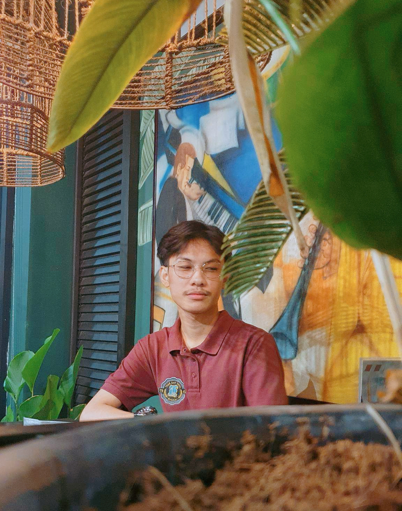
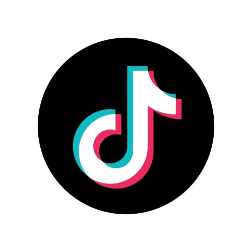
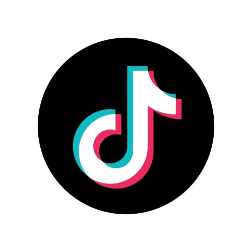
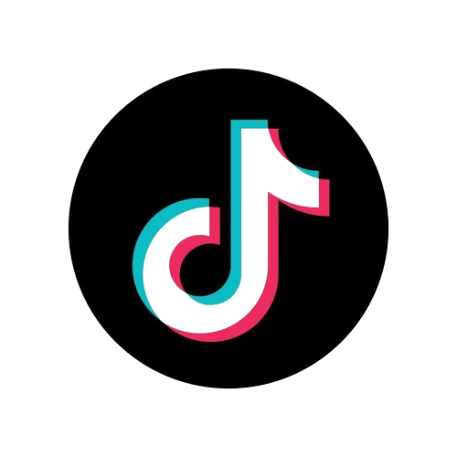

John Lloyd Gonzales
My website purpose is to advertise the coffee beans that is originally made by the Philippines,
while prioritizing my very own advocacy campaign for the sake of the future generations.
Contact me on:
 

Contact me on:
